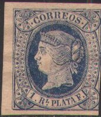
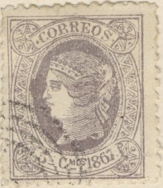
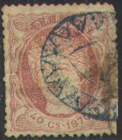
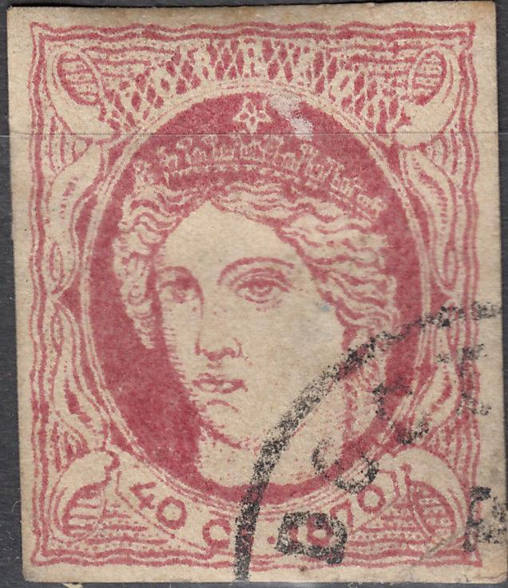
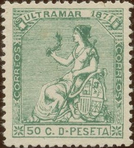
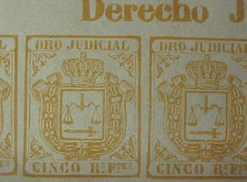

Return To Catalogue - Cuba 1855-1863 (Spanish Westindies) - Cuba - Porto Rico
Note: on my website many of the
pictures can not be seen! They are of course present in the
catalogue;
contact me if you want to purchase it.
Currency: 8 Reales Plata = 2
Escudos = 1 Peso
1866: 100 Centavos = 1 Escudo
1871: 100 Centavos = 1 Peseta
Cuba 1855-1863 (Spanish Westindies)
No indication of the year

1/4 Rl black on yellow 1/2 Rl green 1 Rs blue 2 Rs Plata F. red Overprinted "66"
1/4 Rl black on yellow With inscription "1866" and value in 'CENTIMOS' (Cmos), imperforate

5 c lilac 10 c blue 20 c green 40 c red With inscription "1867" (perforated)
5 c lilac 10 c bleu 20 c green 40 c red
The perforated stamps have perforation 14.
Value of the stamps |
|||
vc = very common c = common * = not so common ** = uncommon |
*** = very uncommon R = rare RR = very rare RRR = extremely rare |
||
| Value | Unused | Used | Remarks |
| No indication of the year | |||
| 1/4 r | * | *** | |
| 1/2 r | c | c | on thick or thin paper |
| 1 r | c | c | |
| 2 r | * | * | on thick or thin paper |
| '66' on 1/4 r | *** | *** | |
| 1866 | |||
| 5 c | ** | *** | |
| 10 c | c | c | |
| 20 c | c | c | |
| 40 c | * | *** | |
| 1867 | |||
| 5 c | * | *** | |
| 10 c | * | * | |
| 20 c | * | * | |
| 40 c | * | ** | |
(Ellipse with lines and stars, reduced size)
The above stamps are forgeries no. 1 described in Album Weeds: a very easy way to detect these is the cancels, that can only be found on these stamps; an ellipse with lines inside (two different types of cancels) or a dot pattern. The pearls of the left and right ornaments at both sides of the zig-zag lines are touching the inner and outer frameline for many of them. In the originals the pearls never touch the frame. Furthermore, the dot before and after the word "CORREOS" are placed too close to the letter "C" and the letter "S" (this is true especially for the letter "C"). The crown that the queen is wearing is rather unsharp compared to the originals. The 2 Rs has the line directly below "2 Rs. PLATA F." broken (in the originals it is not). For the other values, this line is almost absent.
 
Rather primitive forgeries with a bored looking Queen. I've also
seen the 10 c blue value of this forgery set.


Other forgeries, made by the forger Segui.
In my view, the second "R" of "CORREOS" is
too large. Next to it a similar forgery of Spanish Westindies.

Very primitive forgeries of the 1 Rl and 2 Rl stamps with the
face of the Queen different and the whole design very blotchy.
Other primitive forgery.

Forged 1/4 Rl stamp with forged "66" overprint.
Inscription "ULTRAMAR 1868"

5 c lilac 10 c blue 20 c green 40 c red Inscription "ULTRAMAR 1869"

5 c red 10 c brown 20 c orange 40 c lilac All these stamps exist with overprint "HABILITADO POR LA NACION"
(Reduced size)
These stamps have perforation 14.
Value of the stamps |
|||
vc = very common c = common * = not so common ** = uncommon |
*** = very uncommon R = rare RR = very rare RRR = extremely rare |
||
| Value | Unused | Used | Remarks |
| 1868 | |||
| 5 c | * | * | |
| 10 c | * | * | |
| 20 c | * | * | |
| 40 c | * | * | |
| 1869 | |||
| 5 c | *** | *** | |
| 10 c | * | c | |
| 20 c | * | * | |
| 40 c | ** | * | |
Overprints |
|||
| All values | *** | *** | |
Be careful, forgeries exist of the overprint, examples:
I think the above forgery is mentioned in 'Album Weeds': the second line reads "PO LA" instead of "POR LA" and the letters of "NACION" are very widely spaced.
(Forged overprints of Fournier and forged Fournier cancel taken
from a Fournier Album of Philatelic Forgeries)
Primitive forgery of the 10 c 1868 stamp:
This is the forgery mentioned in Album Weeds, the nose is very sharp, there is no dot behind "1868" and the inner line of the central circle is too thick compared to a genuine stamp. I've seen both the 1868 and 1869 set of these forgeries. These forgeries might have been made by Spiro.

Other imperforate forgeries, made by Segui
Postal forgeries exist of the values 20 c and 40 c of the 1868 issue and the 20 c value of the 1869 issue:


Postal forgeries of the 20 c 1868 and 20 c 1869 issue; the 'C' in
the upper left corner is different. Also, the nose in the 20 c
1868 forgery is flattened.
5 c blue 10 c green 20 c brown 40 c red
These stamps have perforation 14.
Value of the stamps |
|||
vc = very common c = common * = not so common ** = uncommon |
*** = very uncommon R = rare RR = very rare RRR = extremely rare |
||
| Value | Unused | Used | Remarks |
| 5 c | *** | *** | |
| 10 c | c | c | |
| 20 c | c | c | |
| 40 c | *** | *** | |
Special cancels:


Forgeries:
Forgeries, possibly made by Segui
I have no information about the distinghuishing characteristics of the above forgeries.

Badly printed forgery. The word "CORREOS" is almost
invisible. The second stamps has a "VF" cancel (see VF Cancelled forgeries).

Spiro forgeries, note the typical 'Spiro' cancels.

12 c violet 25 c blue 50 c green 1 p brown
These stamps have perforation 14.
Value of the stamps |
|||
vc = very common c = common * = not so common ** = uncommon |
*** = very uncommon R = rare RR = very rare RRR = extremely rare |
||
| Value | Unused | Used | Remarks |
| 5 c | * | * | |
| 10 c | c | c | |
| 20 c | c | c | |
| 40 c | * | * | |
Postal forgeries exist of these stamps.

Postal forgery of the 50 c value; the '0' of '50' is too small
and slanting backwards. The vertical lines in the shield are not
long enough when compared to a genuine stamp.

(Imperforate stamp, forgery?)


Philatelic forgeries, judging from their cancels most of them are
Spiro products.

In this design exist the values: 1/2 r (black, green, orange or blue), 1 r (blue, black or violet), 2 r (violet, green, orange or red), 5 r (violet, orange, red or black), 10 r (black, red, green, orange or violet), 100 r (blue, red, violet or green).


{kind=link}
{kind=link}
{kind=link}
{kind=link}
{kind=link}
{kind=link}